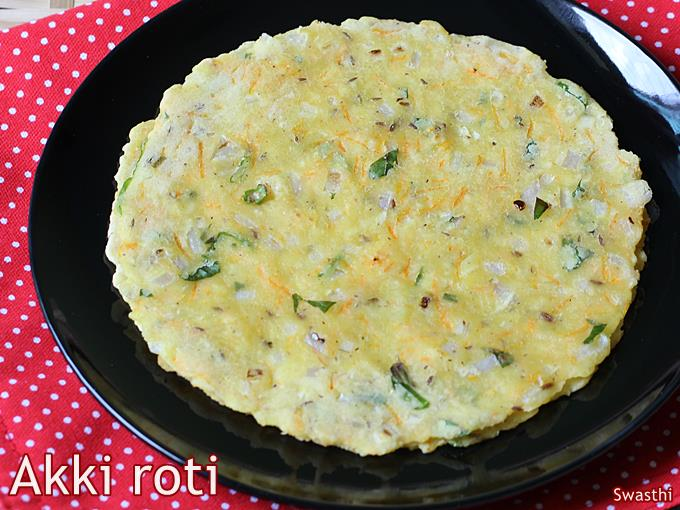

Akki Roti is an all-time favourite snack in traditional Kannada households, where it is made for breakfast or evening tiffin. It is a quick and easy recipe, which does not require grinding or fermenting any batters.

Ingredients
1 cup Rice Flour
1/4 TspSalt
1 No.Onion, Finely Chopped
Piece of Ginger, Finely Chopped
1 No.of Green Chilli, Finely Chopped
1 TspOil
SomeWarm water
1 No.Butter Paper
SomeGhee
Preparation
To a bowl, add rice flour, salt, onion, ginger, green chili, carrot and coriander leaves.
Add oil and gradually pour warm water to make the dough.
Divide the dough into equal portions and keep them aside.
Take a butter paper and grease it with butter. (Banana leaf can be used instead of butter paper)
Place dough ball in the center and press it gently.
Flatten it by pressing on all sides evenly.
Make a few holes to help the roti cook evenly.
Heat a tawa and brush a little ghee.
Place the akki roti on tawa and add a little ghee.
Roast the roti till it turns golden brown in colour on both the sides.